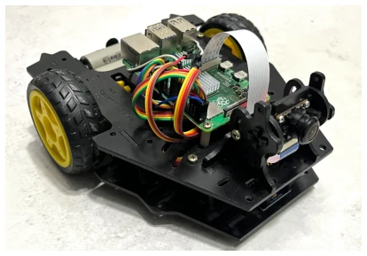
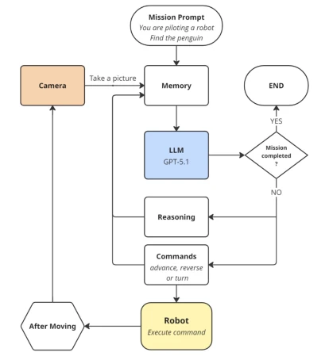
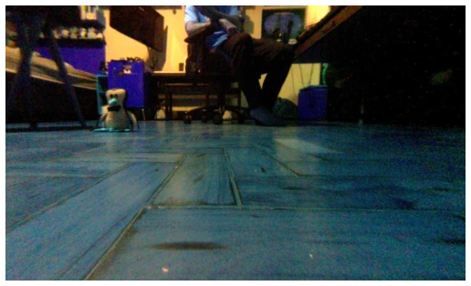
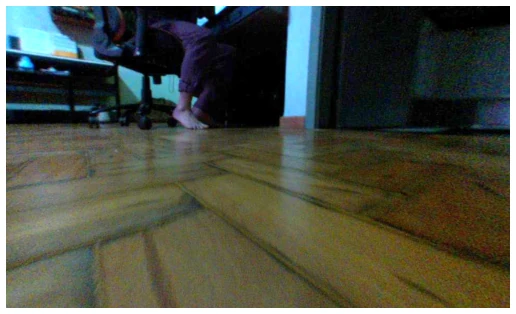
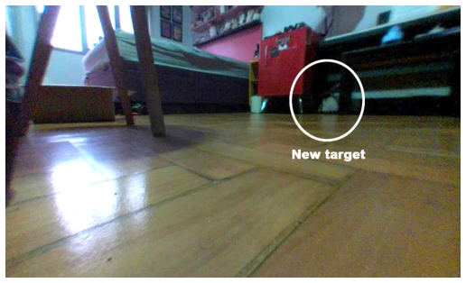
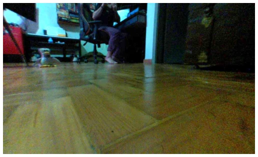
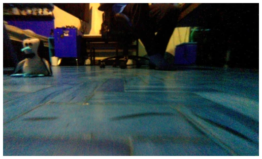
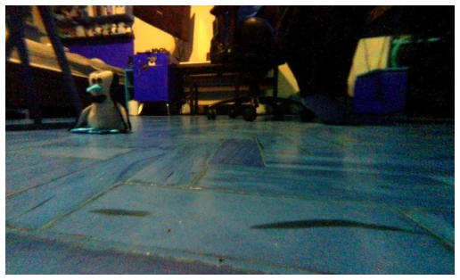
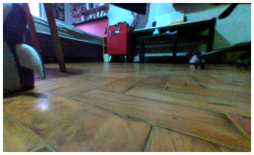

This paper attempts to demonstrate that GPT-5.1 possesses world model capabilities without physical training, which sounds like forcibly "stuffing" a body into a large model. Although experimental results indeed demonstrated surprising spatial reasoning and physical interaction intuition, such as inferring position after the target moves out of view, and even reversing after collision to confirm, the process was not elegant. The robot often followed "spiral routes" rather than straight lines, and mistook distant fake penguins for real targets; this "hallucination" exposed that the model's understanding of physical continuity remains fragile. Rather than true embodied intelligence, it is more like probabilistic fitting of large models under limited constraints. However, challenging the traditional cognition that "the body is a prerequisite for intelligence" is indeed worth pondering. Although this research is exploratory, it provides a new perspective for understanding the boundaries of large model physical understanding, although its robustness still needs verification.
The field of embodied intelligence has long been controversial; cognitive science posits that intelligence must rely on sensorimotor interaction [1][2], and the symbol grounding problem [7] also indicates that symbols without bodily reference lack meaning. Existing work such as PaLM-SayCan [8], while utilizing LLMs for high-level planning, relies on low-level controllers and is mostly trained offline or in simulation. This paper aims to investigate whether models trained on pure text and images can control real robots without physical experience, bridging the gap from semantic reasoning to physical execution. This concerns whether large models possess intrinsic physical representations, rather than merely being action translators.

Fig. 1. The differential-drive mobile robot platform equipped with a forward- facing camera used in this study.
The system adopts a closed-loop architecture, with the robot serving as the actuator and GPT-5.1 as the high-level controller. The workflow is as follows: the robot collects first-person images, which are input into the LLM along with task context and historical memory. The model generates reasoning text and outputs discrete action commands (forward, backward, rotate). After execution, new images are collected to form cumulative context, iterating until the task is completed. The innovation lies in not using reinforcement learning fine-tuning, relying solely on Prompt engineering to constrain the action set, and utilizing the LLM's long-context capability to maintain short-term memory, achieving a perception-action loop. Specifically, the action set is restricted to advance, reverse, and rotate to ensure control stability. The memory mechanism accumulates historical images and reasoning trajectories, enabling the model to infer current environmental changes based on past states, thereby achieving basic navigation logic in the absence of an explicit physical engine.

Fig. 2. System architecture showing the closed-loop interaction between the LLM (GPT-5.1), robot and camera.
Tasks included finding and touching plush penguins, as well as knocking them over. Results showed 4 successes out of 5 trials in the touch task, and 2 out of 5 fully successful trials in the knock-over task. The key finding is that the model can infer the target's position after it moves out of view (Run 2), demonstrating spatial memory. However, there are defects, such as an inefficient alignment strategy (spiral forward) and misidentification of distant distractors. This indicates the model possesses preliminary physical understanding, but robustness is insufficient, requiring more control experiments for verification.

Fig. 3. Penguin is visible ahead-left.

Fig. 7. Penguin left the frame. Model correctly infers its position.

Fig. 10. Model misidentifies a distant penguin.
其他图片Other Figures

Fig. 6. Penguin is visible left of center.

Fig. 4. Penguin is ahead-left, closer.

Fig. 5. After small rotation.

Fig. 8. Penguin visible on the left, after rotation.